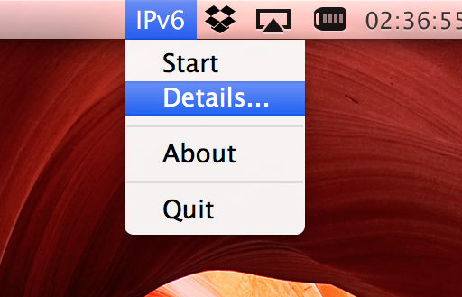
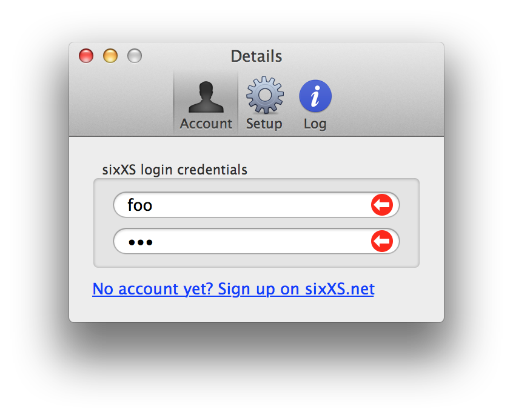
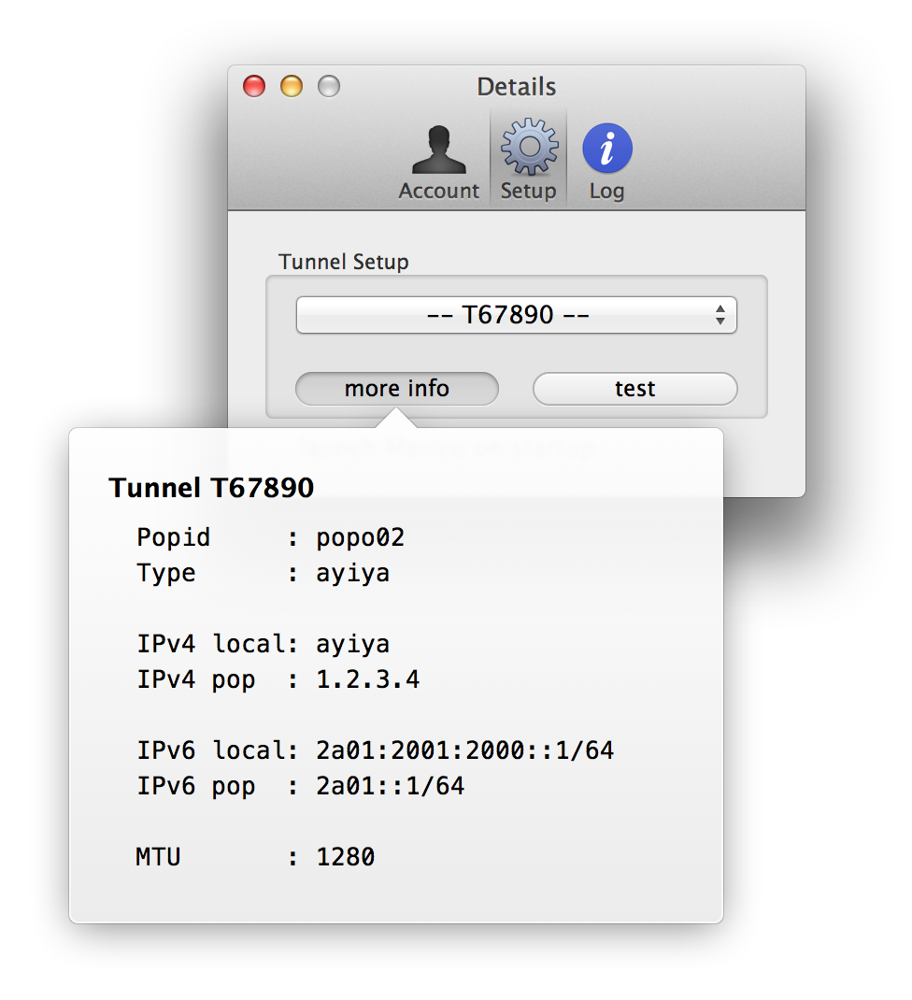

IPv6 tunnel client for Mac
Maiccu gives you the possibility to configure an IPv6 tunnel on your Mac. It provides an user-friendly graphical interface on which you can retrieve tunnel data from a tic server and establish a connection to a PoP.
Maiccu is based upon the command-line tool aiccu and licensed under GPLv3 – so you are welcome to participate on the development.
Here, of course!
You don’t want to miss any updates – follow me on twitter and app.net or visit my blog.
Since Gate Keeper is an integral component of OS X Mountain Lion, you will get in trouble if you open Maiccu from the Finder the first time. To solve this problem, you just need to make a right-click on the app icon and select ‘open’ in the pop-up menu.
status bar menu 
login window 
setup window 
Maiccu - an IPv6 tunnel client for Mac
Copyright (C) 2013 Kristof Hannemann
This program is free software: you can redistribute it and/or modify it under the terms of the GNU General Public License as published by the Free Software Foundation, either version 3 of the License, or (at your option) any later version.
This program is distributed in the hope that it will be useful, but WITHOUT ANY WARRANTY; without even the implied warranty of MERCHANTABILITY or FITNESS FOR A PARTICULAR PURPOSE. See the GNU General Public License for more details.
You should have received a copy of the GNU General Public License along with this program. If not, see http://www.gnu.org/licenses/.
Some components of Maiccu are containing the following license:
AICCU - Automatic IPv6 Connectivity Configuration Utility
The SixXS License - http://www.sixxs.net/
Copyright (C) SixXS Staff info@sixxs.net
All rights reserved.